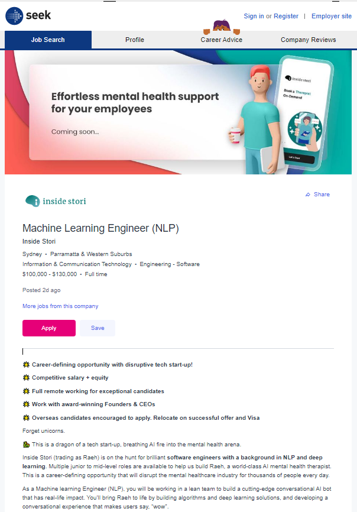
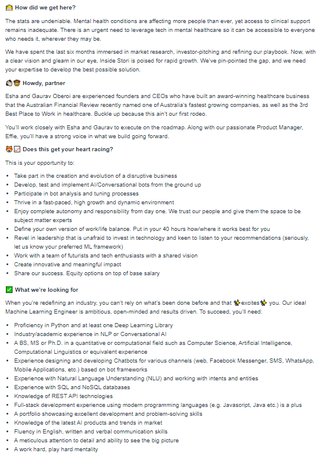
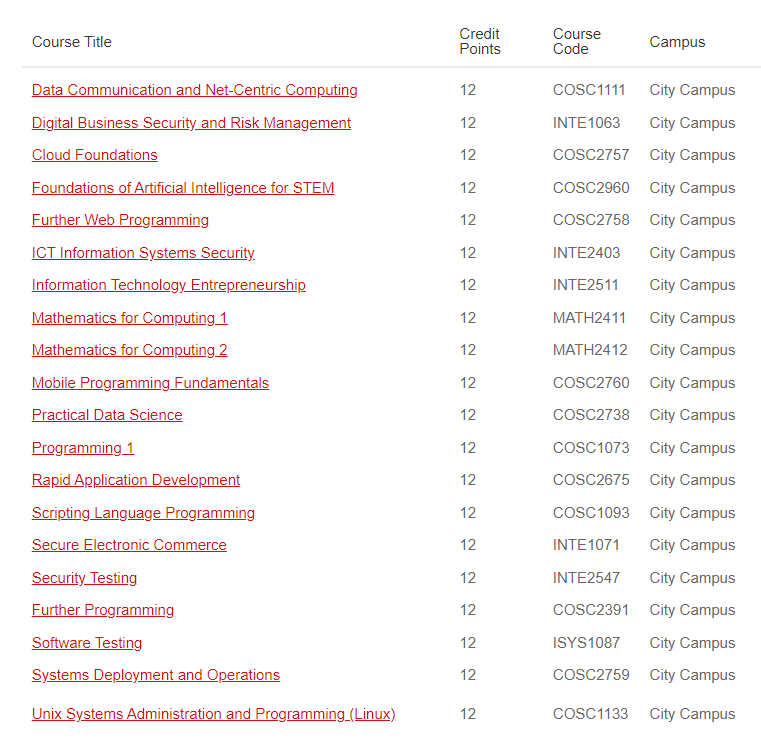

Figure 6
What makes it appealing
Seek.com Job Ad
(May not be available)
(Accessed: March 12, 2022)
My ideal job would be working with the new start up ‘Inside Stori’ as a Machine Learning Engineer. They are looking for someone to support in the NLP aspect of developing a conversational AI mental health therapist. According to statistics provided by Seek.com, ML Engineer roles were advertised between $120,000 and $150,000. Although this may be on the lower end of the spectrum, I have to take location into account. Living in Sydney would be a great place to settle seeing as I’ve got an uncle I’m really close to there, moreover, I took a look at a couple photos of the Parramatta city, and it looks really good looking and appealing. Additionally, contributing to developing an AI therapist which would be accessible by anyone with an internet connection would be great as I’d be supporting people and have a real world impact without the limitation of location that physical therapists suffer from, plus, more anonymity for users which may add an aspect of comfort.
Requirements for Position
The advertisement on Seek.Com requires an elaborate skillset and specific industry experience. Firstly, you must know Python and at least on Deep Learning Library. Have some academic experience in NLP or conversational AI and a MS or Ph.D. qualification in a quantitative or computation field. You are required to have knowledge of SQL and NoSQL databases and REST API technologies. In addition to things that can be learnt academically, I am required to have some industry experience by dealing with designing and development of a chatbot for various channels based on bot frameworks and experience with NLU.
Continued screenshot of Job Ad →
Figure 7
Figure 8
Current qualifications and experience
I currently showcase a fair amount of knowledge in python. I’ve completed a couple online free courses on Coursera called Programming for Everybody*10 in the past and looked a little into Object-Oriented Programming. I’m currently performing a course in Practical Database Concepts at RMIT and by the end of the semester, will hopefully have some fair knowledge with SQL databases and can achieve knowledge of NoSQL databases in the future. During my senior year, I was the president of the Student Council and learned how to deal with people of all ages and could contribute that by having an adaptive chatbot based on the user’s age the same way I used to deal with people differently back then as a conversation with the academic director was more professional and straight to the point, however, when conversing with primary school kids, I would focus on making sure they were heard and appreciated.
How I might meet the remaining requirements
In order to obtain the necessary skills, I decided to break it down into academic items and things that can be achieved through industry experience. To start, I am required to have extensive knowledge in Python and a Deep Learning Library, I’m planning on completing the COSC2815, Advanced Programming in Python course at RMIT either this summer, in semester 2 or potentially during my third year as a University Elective*6. Additionally, I was recommended by the elitedatascience website*7 to start with the Keras Deep Learning library as it’s a heavyweight library and beginner-friendly, however, I may try and pick up the Lasagne Deep Learning library as well as it may fair useful having knowledge in both a heavyweight and lightweight library. Secondly, I plan on taking the Machine Learning course at RMIT during my third year to learn more about the field, but I am required to take a Mathematics in Computing 1 course which I plan on performing during either the summer or year 2 of my course. Moreover, I plan on performing an online course to learn more about NoSQL databases and potentially a programming 1 course which is covered in Java. Furthermore, in the future, after receiving the relevant industry experience, I will look into doing a MS in Computer Science or Masters in AI to meet additional academic requirements and specialize in the field. In terms of experience, I deduced that applying for a company like Appinventiv*8, the leading chatbot development company according to mobileappdaily*9, or something of a similar scale would assist me in receiving the necessary industry experience to satisfy the requirements, moreover, it provides me the chance to learn more about the competition within the market.